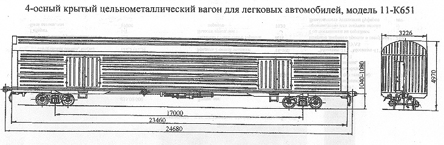

Назначение: для перевозки легковых автомобилей
Параметры
| Номер проекта | ЦМГВСБ00А2 |
| Технические условия | ОТУ24-5-138-69 |
| Модель вагона | 11-К651 |
| Тип вагона | 926 или 924 |
| Изготовитель | КАВЗ |
| Грузоподъемность, т | 42 |
| Масса тары вагона, т | 42 |
| Нагрузка: статическая осевая, кН(тс) |
215,6(22) |
| погонная, кН/м(тс/м) | 32,73(3,34) |
| Скорость конструкционная, км/ч | 120 |
| Габарит | 1-Т |
| База вагона, мм | 17000 |
| Длина, мм: по осям сцепления автосцепок |
24780 |
| по концевым балкам рамы (длина рамы) | 13460 |
| Ширина максимальная, мм | 3226 |
| Высота от уровня верха головок рельсов максимальная, мм | 4970 |
| Количество осей, шт. | 4 |
| Модель 2-осной тележки | 18-100 |
| Наличие переходной площадки | нет |
| Наличие стояночного тормоза | есть |
| Длина кузова внутри, мм | 23340 |
| Ширина кузова внутри, мм | 3100 |
| Высота кузова по боковой стене, мм | 3672 |
| Год постановки на серийное производство | |
| Возможность установки буферов | нет |